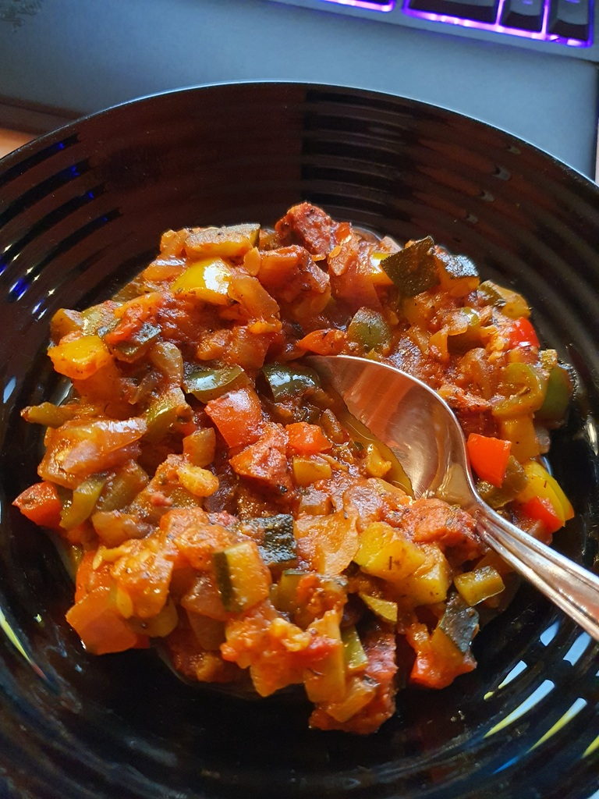

Skład:
- kiełbasa;
- papryka;
- cukinia;
- cebula;
- pomidory;
- sól;
- pieprz;
- papryka wędzona;
- papryka chili;
Przygotowanie:
Cebulę i kiełbasę pokroić w kostkę i podsmarzyć na złoty kolor. Pozostałe składniki pokroić w kostkę i wrzucić do garnka z wcześniej przygotowaną cebulą i kiełbasą, dodać przyprawy. Zalać małą ilością wody - żeby zapobiec przypaleniu leczo. Dusić do zmięknięcia warzyw - z założenia im dłużej tym bardziej aromatyczne leczo. Co do ilości skłądników wszystko zależy ile leczo chcesz przygotować. Należy się trzymać proporcji między kiełbasą, papryką i cukinią - tj, dodać je w równej ilości. Ilość cebuli i pomidorów zależy od upodobań, tak samo jak papryki chili czy pieprzu.
Zdjęcia:
